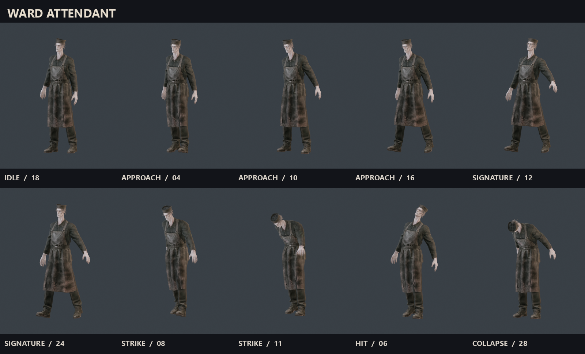
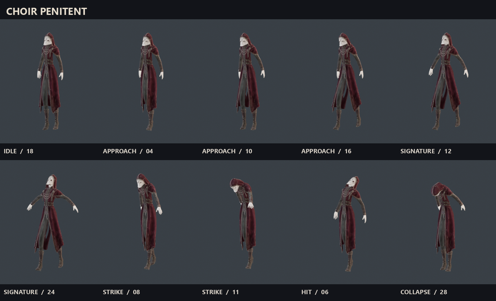
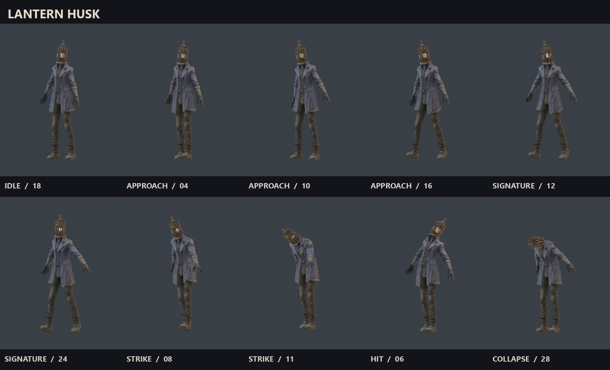

Ward Attendant
A recognizable hospital silhouette at the end of a corridor. A slow shoulder rise telegraphs a heavy close-range attack; the broad apron keeps its outline legible in shadow.

The Last Dead / character study 03
These sheets sample actual Blender poses on new Meshy humanoid rigs. Each character has six named GLB clips: idle, approach, signature warning, strike, hit, and collapse. The PNG atlas is for motion review; the skinned GLB is the browser asset.
The models are prepared as candidate game assets. This study leaves enemy spawning and combat behavior alone while the main game iteration continues.
A recognizable hospital silhouette at the end of a corridor. A slow shoulder rise telegraphs a heavy close-range attack; the broad apron keeps its outline legible in shadow.

A narrow ceremonial figure whose empty mask and split coat read from distance. Its invocation opens the arms before the lunge, creating a quiet warning beat.

A moving point of dim light inside a caged head. Its searching turn can hint at something behind a doorway before the body follows.

{kind=link}
{kind=link}
{kind=link}